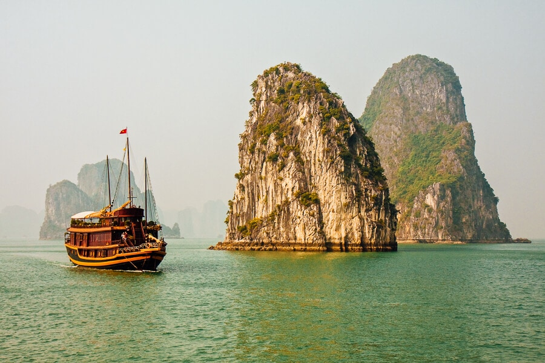
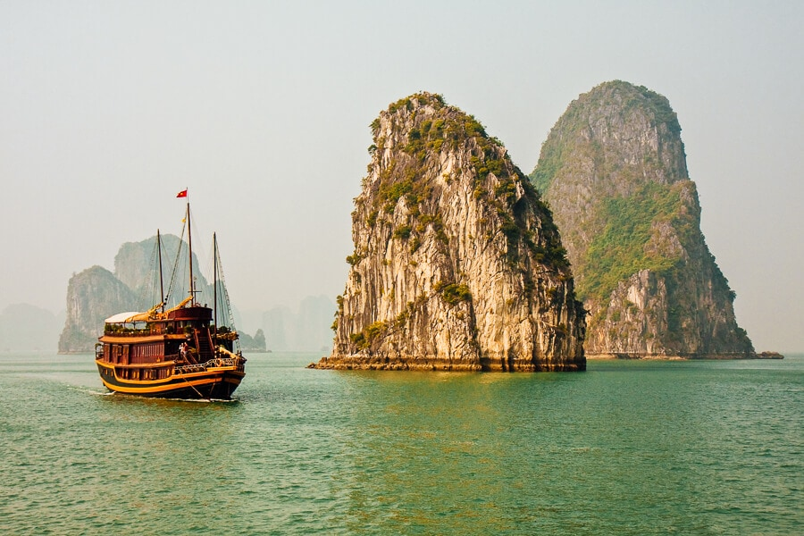

Ha Long Bay is a beautiful natural wonder in northern Vietnam, near the Chinese border.
The Bay is dotted with 1,600 limestone islands and islets and covers an area of over 1,500 sq km.
This extraordinary area was declared a UNESCO World Heritage Site in 1994. Most of the islands and the karst limestone pillars in the bay are uninhabited and unaffected by human activity.
For many travellers, this place is like something right out of a movie. The fact is that Ha Long Bay features a wide range of biodiversity,
while the surrealistic scenery has served as the magical backdrop of various scenes in numerous feature films.
 
